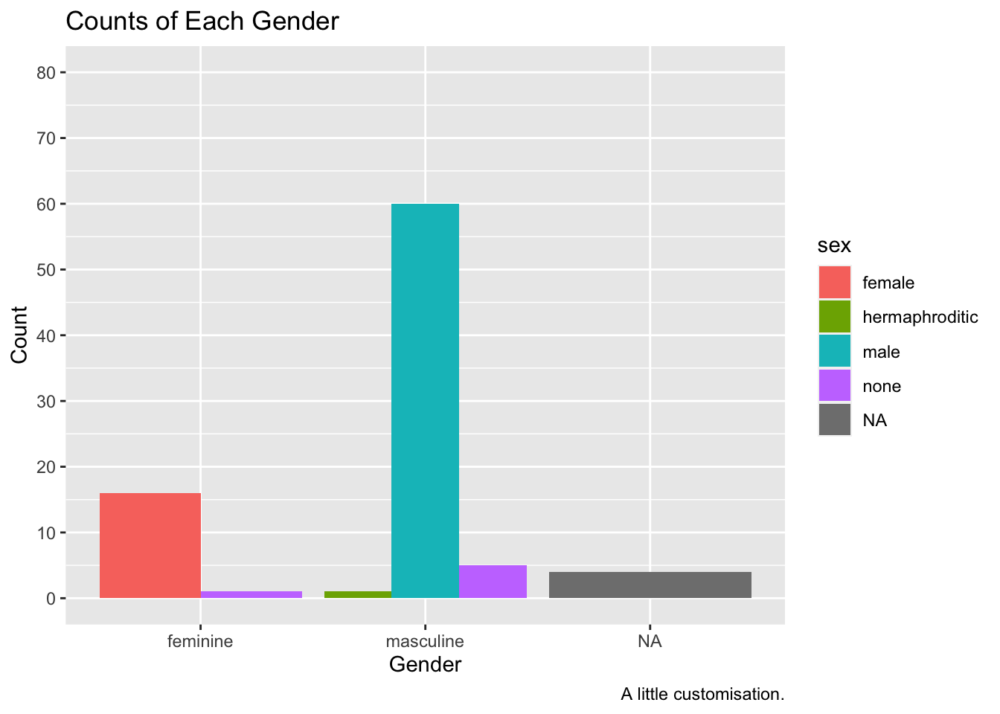

library(tidyverse)2 Creating Graphs
Creating publication-ready data visualisations is a particular strength of R due to the ggplot2 package which uses a consistent grammar of graphics. This makes creating plots fairly logical and consistent, requiring minimal code regardless of your intended plotting style.
At the end of this chapter, you’ll understand:
The grammar of graphics, helping you to grasp how R (and how you can) build plots. Here, we will focus on geometric objects, aesthetics, scales, and annotations.
How to create a series of faceted sub–plots.
How to customise your plots with various themes, scales, labels, and other additional content.
How to combine plots quickly and easily using the
patchworkpackage.How to save your plots to file.
While this is a lot of content for one chapter, by the end you should see how using a consistent grammar makes learning all of this possible in such a short amount of time. We will also briefly cover some advanced topics to show you some of the additional functionality of ggplot2.
2.1 The Grammar of Graphics
In R, you can build plots using the base plotting system or lattice graphics. The former is very low level, giving you a lot of granular control over plotting at the cost to specifying everything manually. The latter is more high level but makes customisation difficult. Thankfully, ggplot2, a package in the tidyverse strikes a good balance between the two. Most notably, however, it relies on a grammar of graphics to make creating bespoke plots consistent across many types of visualisations.
Broadly, a grammar of graphics is a set of rules we can use to describe the components of a graphic. In the context of creating plots in R, the approach moves away from focusing on specific types of plots (e.g. a scatter plot, a box plot, a bar plot), instead focusing on the elements of the plot that can be build up to create different visualisations (Wickham 2010).
In ggplot2, this means every plot must define a data set from which to map onto a canvas. From here, we add layers to the plot. Some key concepts that form the basis of every plot are:
geoms: these are geometric objects that you map your data to. For example, points on a scatter plot.aes: these are the aesthetics you define which map certain parts of your data to the plot. For example, the which parts of your data should be mapped onto the x and y coordinates of a scatter plot.scale: the scale you want to have for your axes. This is often calculated using sensible defaults inggplot2, but sometimes you’d like control over this.annotations: Labels used for axes, titles, captions, etc. to help with communicating your results. The functions
lab()andannotate()are key here.
In addition to these key ideas, ggplot2 allows you to create faceted plots, where we can produce many panels of a plot across variables, allowing you to create many sub plots with a simple, one-line command.
Beyond these basic ways to define your plot, ggplot2 comes with various themes that set sensible defaults for many parameters that define the look of the plot. We will explore these and how to customise them.
2.2 Building a Plot, Layer by Layer
To get started, we’ll need a data set. R itself comes with a few data sets build in that we can use for examples. However, there are more fun data sets to use in the packages we’ve already installed. We’ll use the starwars data set from dplyr.
As always, we’ll first load the tidyverse.
Once loaded, we can load up the starwars data set from the dplyr library (one of the libraries loaded up when using library(tidyverse). Let’s take a look at it.
starwars# A tibble: 87 × 14
name height mass hair_…¹ skin_…² eye_c…³ birth…⁴ sex gender homew…⁵
<chr> <int> <dbl> <chr> <chr> <chr> <dbl> <chr> <chr> <chr>
1 Luke Skywa… 172 77 blond fair blue 19 male mascu… Tatooi…
2 C-3PO 167 75 <NA> gold yellow 112 none mascu… Tatooi…
3 R2-D2 96 32 <NA> white,… red 33 none mascu… Naboo
4 Darth Vader 202 136 none white yellow 41.9 male mascu… Tatooi…
5 Leia Organa 150 49 brown light brown 19 fema… femin… Aldera…
6 Owen Lars 178 120 brown,… light blue 52 male mascu… Tatooi…
7 Beru White… 165 75 brown light blue 47 fema… femin… Tatooi…
8 R5-D4 97 32 <NA> white,… red NA none mascu… Tatooi…
9 Biggs Dark… 183 84 black light brown 24 male mascu… Tatooi…
10 Obi-Wan Ke… 182 77 auburn… fair blue-g… 57 male mascu… Stewjon
# … with 77 more rows, 4 more variables: species <chr>, films <list>,
# vehicles <list>, starships <list>, and abbreviated variable names
# ¹hair_color, ²skin_color, ³eye_color, ⁴birth_year, ⁵homeworldWe have 87 rows of data with 14 columns containing information about different characters from Star Wars.
Let’s build our plot up, one layer at a time. Every plot made in ggplot2 must define the dataset within the ggplot() function.
ggplot(data = starwars)
That hasn’t done much. All we did was create a canvas for our data. But, this is the first step to any plot.
Next, we’ll add our geometric objects to the plot. We’ll make a scatter plot of the mass and height of each character. To do this, we use the geom_point() function. But, we’re not done yet. The following code won’t run because we’re missing some key information. Try this yourself to see what’s wrong.
ggplot(data = starwars) +
geom_point()We have to specify how ggplot2 should map the data we have onto the aesthetics of the plot to create the points. To do this, we need to tell it which parts of our data set should be mapped onto the relevant aesthetics of the plot. For simple points, this means we must define the key aesthetics of a point, the x and y values on the axis and where to get these in our data set.
Try this code below, which should now work properly.
ggplot(data = starwars) +
geom_point(mapping = aes(x = mass, y = height))Warning: Removed 28 rows containing missing values (`geom_point()`).
We have a plot, but we also got a warning stating that we have 28 rows in our data set that contain missing values. These rows with missing data are thus missing from the plot. ggplot() tells us about this missing data because it’s generally good practice to explicitly remove values with missing data before you try to plot them. Take this as a reminder that either (1) you need to remove these points prior to plotting, or (2) you can confirm that the number of missing values ggplot() tells you about matches what you’d expect from your understanding of the data.
Note
Warnings in R are there to tell you that the output of your code may not contain what you wanted it to contain. In the previous plot, ggplot dropped those with missing heights and masses, even though we didn’t explicitly tell it to do so. If you remove these ahead of plotting you won’t get a warning.
Warnings are different to errors in that your code will still work, but you need to check out whether it did what you wanted it to do. On the other hand, errors indicate you did something wrong and your code will fail to run.
A further thing you might notice here is the big outlier. One character has a middling height but a huge mass. We might choose to highlight this or do further investigations later. Regardless, this is a good reminder that the best thing you can do to understand your data prior to analysis is plot it.
2.2.1 Aesthetics
While for geom_point() the mandatory aesthetics are x and y values for plotting the points, you can also define additional aesthetics based on variables within your dataset. Let’s pick out the gender of each character.
2.2.1.1 Colour
ggplot(data = starwars) +
geom_point(mapping = aes(x = mass, y = height, colour = gender))
Note
You may have noticed my plots have stopped outputting a warning. I’ve suppressed this in Quarto by using the code chunk options. You can set many options for chunks. Here, I’ve set messages such as warnings to not display. You do this by inserting your options using the hash-pipe (not the Weezer song) as follows:
#| warning: false
2.2.1.2 Coordinates
While we’ve now picked out each dot with the colour representing gender, it’s difficult to see any real trends here due to the outlier. We can tackle this in two ways:
- Filter out the outlier prior to plotting the data. We’ll cover this in Transforming Data.
- Change the coordinates of the plot to only include a limited range.
We’ll go with the latter option now to show the capabilities of ggplot2 and to highlight how we can build plots up layer by layer by just adding more commands.
To limit the x-axis to a restricted range we need to provide two concatenated values, the start and end of the axis, to the xlim argument in the coord_cartesian() function. This function also takes ylim arguments if you’d like to limit that too.
ggplot(data = starwars) +
geom_point(mapping = aes(x = mass, y = height, colour = gender)) +
coord_cartesian(xlim = c(0, 180))Now we have a better understanding of our data and any general trends across those within a more restricted range of masses.
Warning
We can alternatively remove data from our plot by setting limits on the x-axis using scale_x_continuous(limits = c(0, 180)). This may seem more intuitive than coord_cartesian(), but it throws out the data points outside the limits prior to plotting. This isn’t a problem in this instance, but if we want to, for example, draw a line of best fit through our data, scale_x_continuous() will ignore the outlier, while coord_catesian() will still include it. Of course, the option to include or exclude this in your estimates is a decision you have to make informed by your domain knowledge. But, being aware of what is going on in each option is crucial to make sure you make the correct inferences.
What if we want to change the look of our points, but we want to apply this change to every point (i.e. not making it vary by some column in the data set). We simply have to specify some options outside the aes() call.
ggplot(data = starwars) +
geom_point(
mapping =
aes(
x = mass,
y = height,
colour = gender
),
alpha = 0.7, # opacity
shape = "triangle", # triangles
size = 4 # bigger points
) +
coord_cartesian(xlim = c(0, 180))Now we’ve set fixed values for some aesthetics, specifically setting the alpha (opacity), shape, and size of the points. Here’s a good list of the aesthetic specifications which provides a good cheat sheet to all the aesthetics you can change and their options.
Setting an aesthetic within aes() and mapping it to a column in your data allows it to vary. Alternatively, you can define the colour to be set outside of the aesthetic to make it consistent across all data points. If you set both at the same time, the fixed aesthetic takes precedence. Give it a go.
ggplot(data = starwars) +
geom_point(
mapping =
aes(
x = mass,
y = height,
colour = gender
),
alpha = 0.7, # opacity
shape = "triangle", # triangles
size = 4, # bigger points
colour = "red"
) +
coord_cartesian(xlim = c(0, 180))2.2.1.3 Fill
A final thing to bear in mind is that colour and fill are different properties within ggplot2. Below, we’ll change the triangles to filled circles (i.e. a with a border) and we’ll map gender to the fill aesthetic instead of colour.
ggplot(data = starwars) +
geom_point(
mapping =
aes(
x = mass,
y = height,
fill = gender
),
alpha = 0.7, # opacity
shape = "circle filled", # triangles
size = 4, # bigger points
colour = "red"
) +
coord_cartesian(xlim = c(0, 180))Notice how the colour of the circle varies, but the fill of the border is fixed?
Finally, we can see how smart ggplot2 can be in terms of setting legends. If we use a continuous, rather than a categorical variable to define the colour of points you’ll notice that we get a gradient of colours.
ggplot(data = starwars) +
geom_point(
mapping =
aes(
x = mass,
y = height,
colour = birth_year
)
) +
coord_cartesian(xlim = c(0, 180))Notice the very short and light character highlighted in light blue, indicating they are very old? Who could that be?
2.3 Exploring Geoms
There are many geoms that you can use in ggplot2. Some common ones you might use are bars (geom_bar()), boxes (geom_boxplot()), violins (geom_violin()), densities (geom_density()), and histograms (geom_histogram()). Let’s briefly see how we might use each geom.
2.3.1 Bars
Bars are best used to indicate counts. They are often used in Psychology along with error bars to indicate means and 95% confidence intervals or standard errors. However, these aren’t the best way to display continuous data as it (1) hides any information about the distribution of data (e.g. groupings) that may be masked by a bar plot with error bars, and (2) anchor people to the top of the bar such that under or overestimate the magnitude of effects and the potential for dispersion (Kang et al. 2021; Xiong et al. 2020; Correll and Gleicher 2014). So, let’s just use them for counts!
ggplot(data = starwars) +
geom_bar(mapping = aes(x = gender))2.3.2 Boxplots
Boxplots do a nice job of visualising central tendency (specifically the median) and dispersion (specifically the interquartile range), so they are a good choice for looking at continuous outcomes grouped by a categorical measure. Let’s make a boxplot for each gender looking at heights.
ggplot(data = starwars) +
geom_boxplot(mapping = aes(x = gender, y = height))How should you interpret this?
The middle line represents the median
The upper white section of the box the upper quartile: 75% of scores fall below this.
The lower white section the lower quartile: 25% of scores fall below this.
Together the quartiles represent the interquartile range: The middle 50% of scores.
The limits of the whiskers (black lines) for the upper and lower parts of the graph represent the smallest and largest observations that are equal to the upper or lower quartiles minus or plus 1.5 times the interquartile range. Effectively, this is most of the rest of the data, apart from outliers.
The dots represent outliers (i.e. those values outside of the whiskers).
2.3.3 Violins
Violin plots show you the density of the mean scores. The wider the section of the violin, the more scores around that area. We set trim to FALSE within the violin plot so that we see the full tails of the data. If we set this to TRUE, then the tails are trimmed to the range of the data.
It can be useful to draw quantiles on the violin plot so they can communicate similar information as a box plot. To do this, set draw_quantiles to concatenated values indicating the quartiles you’re interested in. Here, we chose the upper and lower 25% along with the median.
ggplot(data = starwars) +
geom_violin(
mapping = aes(x = gender, y = height),
trim = FALSE,
draw_quantiles = c(0.25, 0.5, 0.75)
)2.3.4 Histograms
Often, you want to get a general idea of the distribution of your data with the aim of looking at skewness and kurtosis. One way to do this is with a histogram. This bins values into a specific range on your x-axis and looks at counts for observations within each bin. By default, ggplot2 selects sensible bins for us, in this case bins incrementing by 30cm in height. But, you can change this by setting binwidth to whatever value you like.
ggplot(data = starwars) +
geom_histogram(
mapping = aes(x = height),
fill = "white",
colour = "black"
)
From the histogram we can see that the more common heights lie between 150 and 200cm, but we have a fair spread of scores with a few characters much shorter and larger than this.
2.3.5 Density Plots
Density plots work like histograms but apply kernel smoothing to create a density line that approximates the shape of the histogram. This can often be easier to interpret than a histogram as it smooths out the noise in the histogram to make looking at general trends a little easier.
As with other geoms in ggplot2 we can customise our plot by picking out categories in different colours, and even changing the opacity of the plots if we’re concerned with overplotting. Let’s look at the densities of the heights by each gender.
ggplot(data = starwars) +
geom_density(
mapping = aes(x = height, fill = gender),
alpha = 0.5
)We can see that the distribution of heights is different between genders. Due to the small number of observations where gender is NA (i.e. droids in this data set) we can see this density is very narrow with a large peak.
2.3.6 Smooths
If we want to add a line of best fit to a plot, we can either define this line manually, perhaps from some values from a fitted model object, or allow ggplot to do this for us using one of many methods. This relies on ggplot calculating statistics for us based on our data and adding a line of best fit to the plot. To do this, we use the geom_smooth() function. The following methods are available to us:
"lm": the linear model fitted usingstats::lm(), fitting a straight line between the values on the x and y axis to find the line of best fit."loess": locally estimated scatterplot smoothing fitted usingstats::loess(), a nonparametric method to find the line of best fit in non-linear data by fitting many local regressions within the series of data."gam": generalised additive model fitted usingmgcv::gam(), a nonparametric method to find the line of best fit in non-linear data by using a series of basis splines.
For our purposes, we’ll just rely on “lm” to draw a line of best fit through our data.
Note, that we used scale_x_continuous() with a restricted range to remove Jabba the Hutt from our data set as an outlier. Remember, unlike coord_cartesian(), scale_x_continuous() removed the data point entirely, meaning our estimate of the line of best fit will be adjusted.
ggplot(data = starwars) +
scale_x_continuous(limits = c(0, 200)) +
geom_smooth(mapping = aes(x = mass, y = height), method = "lm")ggplot2 will attempt to use a sensible default for the formula used to fit our model. Here, it set the formula to y ~ x as in the values on the y-axis are predicted by values on the x-axis. You can, however, specify an alternative formula by including a string to the formula argument. For example, if we wanted to predict the log of values on the y-axis, we might use formula = log(y) ~ x.
If none of this made sense, then don’t worry. We will turn to model fitting and estimation in later chapters.
2.4 Combining Geoms
We can easily combine geoms in ggplot2 by simply adding another layer to our plot. Let’s create a dotplot and add the line of best fit to the data.
ggplot(data = starwars) +
scale_x_continuous(limits = c(0, 200)) +
geom_point(mapping = aes(x = mass, y = height)) +
geom_smooth(mapping = aes(x = mass, y = height), method = "lm")
Note that there’s a bit of repetition here. We’ve specified the x and y elements in each geom, but they’re just the same. If this happens, we can specify them during the initial ggplot() call and allow these to be inherited by the geoms.
ggplot(data = starwars, mapping = aes(x = mass, y = height)) +
scale_x_continuous(limits = c(0, 200)) +
geom_point() +
geom_smooth(method = "lm")2.5 Positioning
While ggplot2 has many sensible defaults for plotting data, often we want more granular control over the positioning of the elements of a plot. There are a few different positions we can specify. Most often, however, if you want to change the position of an element you want to jitter elements by some amount to avoid overplotting or stop bar plots from stacking and instead set them side by side. We’ll briefly explore each method here.
Often, with scatter plots it’s a better idea to use opacity to help with overplotting as adding jitter clearly influences the interpretation of the plot. But sometimes this still doesn’t help. In these cases, adding some jitter (and making this clear to the reader) is appropriate. Compare the two plots below.
2.5.1 Jitter
ggplot(data = starwars, mapping = aes(x = gender, y = height)) +
geom_point(alpha = 0.5)ggplot(data = starwars, mapping = aes(x = gender, y = height)) +
geom_point(alpha = 0.5, position = "jitter")2.5.2 Dodge
With bar plots we often want to display more than just one variable. To do this, we may choose to pick out the bars on the x-axis in colour.
ggplot(data = starwars, mapping = aes(x = gender, fill = sex)) +
geom_bar()By default, ggplot2 using the “identity” position, where bars are stacked on top of each other within categories. Sometimes this is what we want if we care about the breakdown within the groups on the x-axis. However, if we want to compare absolute values across all subgroups, we need to dodge the bars. We do this using the position = "dodge" argument.
ggplot(data = starwars, mapping = aes(x = gender, fill = sex)) +
geom_bar(position = "dodge")2.6 Customisation
Once we’ve created the elements of the plot using the default settings, we often want to customise it to better present some elements of the plot, or simply to make the plot our own.
2.6.1 Labels
The most basic way to do this is to first change the labels. To do this, we use the labs() function where we can specify various labels such as:
x: the label for the x-axis.y: the label for the y-axis.title: the title of the plot.caption: a caption in the bottom right of the plot.colour: the heading for the legend if picked out by colour.
ggplot(data = starwars, mapping = aes(x = gender, fill = sex)) +
geom_bar(position = "dodge") +
labs(
x = "Gender",
y = "Count",
title = "Counts of Each Gender",
caption = "A little customisation."
)2.6.2 Scales and Breaks
While ggplot2 attempts to find sensible scales for the plot, sometimes you might want to restrict this or set a different number of breaks. For continuous scales, we can set this using scale_x_continuous() and scale_y_continuous(). For discrete scales, it’s unsurprisingly, scale_x_discrete() and scale_y_discrete().
Within these functions we define both where breaks occurs and what the limits of the axes are. Let’s set a wider range on the scale for our previous plot and add additional breaks. We can make these using the seq() function that will give us a sequence of numbers counting by whatever we want to use. We can then set the upper and lower limit of the plotting region.
ggplot(data = starwars, mapping = aes(x = gender, fill = sex)) +
geom_bar(position = "dodge") +
labs(
x = "Gender",
y = "Count",
title = "Counts of Each Gender",
caption = "A little customisation."
) +
scale_y_continuous(breaks = seq(0, 80, by = 10), limits = c(0, 80))
2.6.3 Colours
Often the default colours in ggplot2 are a little garish and not particularly colour-blind friendly. Thankfully, there are a number of packages such as RColorBrewer and even MetBrewer (themes based on art in the Metropolitan Museum of Art in New York which are seriously good) which can help us. Alternatively, we can specify colours using hex codes. We’ll use these here as it means we don’t need an additional package to manage. In this case, we take advantage of scale_fill_manual() to specify a fill for each value we have for the levels assigned to the colour variable in our data set. In this case, that’s 5 colours.
ggplot(data = starwars, mapping = aes(x = gender, fill = sex)) +
geom_bar(position = "dodge") +
labs(
x = "Gender",
y = "Count",
title = "Counts of Each Gender",
caption = "A little customisation."
) +
scale_fill_manual(values = c(
"#efc86e",
"#97c684",
"#6f9969",
"#808fe1",
"#5c66a8"
))
If we instead used colour to pick out the sexes here, we would have to change the function to scale_colour_manual().
2.6.4 Themes
The ggplot2 theme is iconic and easy to recognise. But if you want your plots to stand out, you’ll often want to use a different theme or even tweak and existing theme. There are many themes that come with ggplot2. We’ll use a pretty basic one here, theme_bw(). As with all ggplot2 functions, we just add this to our chain of functions.
ggplot(data = starwars, mapping = aes(x = gender, fill = sex)) +
geom_bar(position = "dodge") +
labs(
x = "Gender",
y = "Count",
title = "Counts of Each Gender",
caption = "A little customisation."
) +
scale_fill_manual(values = c(
"#efc86e",
"#97c684",
"#6f9969",
"#808fe1",
"#5c66a8"
)) +
theme_bw()We might change or remove additional elements by editing the theme further beyond this by using the theme() function. Note that this must come after you choose a pre-made theme or the pre-made theme’s settings will overwrite your own.
ggplot(data = starwars, mapping = aes(x = gender, fill = sex)) +
geom_bar(position = "dodge") +
labs(
x = "Gender",
y = "Count",
title = "Counts of Each Gender",
caption = "A little customisation."
) +
scale_fill_manual(values = c(
"#efc86e",
"#97c684",
"#6f9969",
"#808fe1",
"#5c66a8"
)) +
theme_bw() +
theme(
panel.grid.minor = element_blank(),
panel.grid.major.x = element_blank(),
axis.text = element_text(size = 16)
)Notice here that we removed elements from the theme using element_blank() and we changed text elements by first using element_text() within which we can define the parameters we want to change, such as the font face or size.
2.6.4.1 Legend Position
Finally, the legend can be put in either absolute positions on the plot or in a relative position (e.g. “top” or “bottom”). We can set this again within the theme options.
First, by defining the position within the plot:
ggplot(data = starwars, mapping = aes(x = gender, fill = sex)) +
geom_bar(position = "dodge") +
labs(
x = "Gender",
y = "Count",
title = "Counts of Each Gender",
caption = "A little customisation."
) +
scale_fill_manual(values = c(
"#efc86e",
"#97c684",
"#6f9969",
"#808fe1",
"#5c66a8"
)) +
theme_bw() +
theme(
panel.grid.minor = element_blank(),
panel.grid.major.x = element_blank(),
axis.text = element_text(size = 16),
legend.position = c(.90, .70)
)Second, by defining its relative position:
ggplot(data = starwars, mapping = aes(x = gender, fill = sex)) +
geom_bar(position = "dodge") +
labs(
x = "Gender",
y = "Count",
title = "Counts of Each Gender",
caption = "A little customisation."
) +
scale_fill_manual(values = c(
"#efc86e",
"#97c684",
"#6f9969",
"#808fe1",
"#5c66a8"
)) +
theme_bw() +
theme(
panel.grid.minor = element_blank(),
panel.grid.major.x = element_blank(),
axis.text = element_text(size = 16),
legend.position = "top"
)
Clearly, these plots still have a long way to go, but you get the idea about how much control we have.
2.7 Facets
Another useful part of plotting in ggplot2 is that you can make facets of plots, or subplots. This is a good way to display your data if you have multiple categorical variables. Essentially, you’ll get a plot for each category in your data. There are two approaches to faceting with ggplot2:
facet_wrap(): Letggplotfigure out the rows and columns for you, wrapping your plot around to make the most use of the plotting area.facet_grid(): Manually define variables which should be mapped onto the columns or rows of the plot.
In each case, you have some control over the number of rows and columns you’d like in the plot. Of course, with facet_wrap() this can override some of the behaviour that maximises the use of the plotting space.
2.7.1 Facet Wrap
For facet_wrap(), we define the variables that are mapped onto columns using R’s formula notation, like so: facet_grid(. ~ variable). The dot signifies that we’re not plotting anything onto separate rows, while the variable name to the right of the ~ (read: tilde) denotes the variable you’d like to split your plots by, plotting onto separate columns.
ggplot(data = starwars, mapping = aes(x = height)) +
geom_histogram(fill = "white", colour = "black") +
facet_wrap(. ~ gender)2.7.2 Facet Grid
For facet_grid(), we define the variables that are mapped onto columns or rows using R’s formula notation, like so: facet_grid(rows ~ columns).
ggplot(data = starwars, mapping = aes(x = height)) +
geom_histogram(fill = "white", colour = "black") +
facet_grid(eye_color ~ gender)In this case, we have limited data for each combination of the variables, so many panels are empty. However, this still gives you a good idea of both the data set and the functionality of facet_grid().
By default ggplot2 sets a consistent y-axis range across all facets. However, if you’d like the scales to vary within each facet you have some flexibility:
scales = "fixed": Both x and y axis have fixed scales across all facets.scales = "free": Both x and y axis have different scales defined by the range of the data in each facet.scales = "free_x"orscales = "free_y": Either the x or y axis have free scales respectively, with the other scale set to fixed.
2.8 Combining Plots
Often, you might several plots that serve different data visualisation needs, but you want to display these together in one place. If using Quatro, you can choose to save your plots externally (e.g. to a .png file) and then load them back into Quarto, using the options to display subfigures to display plots side by side. However, you may want to just display these plots in your document from R code without saving the plots (but still retaining this option if you choose). For this, we can use the patchwork package. To use this package, we have to load it up like any other package prior to using it.
library(patchwork)We can assign our plots to variables just like any other object in R. Let’s create two plots, my_histogram and my_dotplot using the following code:
my_histogram <- ggplot(data = starwars, mapping = aes(x = height)) +
geom_histogram(fill = "white", colour = "black")
my_dotplot <- ggplot(data = starwars, mapping = aes(x = height, y = mass)) +
geom_point()Then we can simply add the plots together to display them side by side.
my_histogram + my_dotplotWe can make relatively complicated layouts by nesting plots together using () and defining separate rows using the /. First, let’s make one final before we make a 3 plot output with 2 rows.
my_boxplot <- ggplot(
data = starwars,
mapping = aes(x = gender, y = mass, colour = gender)
) +
geom_boxplot() +
coord_cartesian(ylim = c(0, 200))Now, let’s add all of this together:
(my_histogram | my_dotplot) / my_boxplot2.9 Saving Plots
Finally, once you’ve created these plots you might want to save them for further use beyond R and Quarto documents. To do this, we use the ggsave() function which expects us to define a file name (optionally set at a specific path). Note that you need to include the file type. Often, you will want to save your plot as a .png file as these can be small, lightweight, allow transparency, and compress relatively well with little artifacting (cf. .jpegs). Alternatively, you can use a vectorised format (e.g. .svg or .pdf) that scales up and down to different sizes while maintaining the integrity of the plot even better than .png files.
Next, ggsave() expects the name of the object you saved your plot to, or the last plot you created. I suggest you’re always explicit with this: Once happy with a plot, assign it to an object and save it by specifying the name of the plot. That way, you know you’ll have saved the correct version of your plot.
ggsave(
filename = "my_plot.png",
plot = my_histogram
)2.10 Advanced Functionality
There’s a lot more we can do in ggplot beyond what we’ve covered here. But these basics cover the most important use cases you’ll come across. You now understand how to build plots, what options there are for different aesthetics and geometric shapes, how to change positioning of elements, how to create subplots, and how to combine and save your plots.
Beyond this, you might want to explore using the stat_summary() functions in ggplot, which allow you to aggregate data and create statistics such as standard errors and 95% confidence intervals from your data. However, in later sessions we will explore how to get these values from fitted model objects and create plots directly from these values, obviating the need for calculating these statistics in ggplot.
Once you understand that, you might want to check out modern plotting approaches such as creating raincloud plots to show the raw data, density of data, central tendency and confidence intervals together in one attractive package.